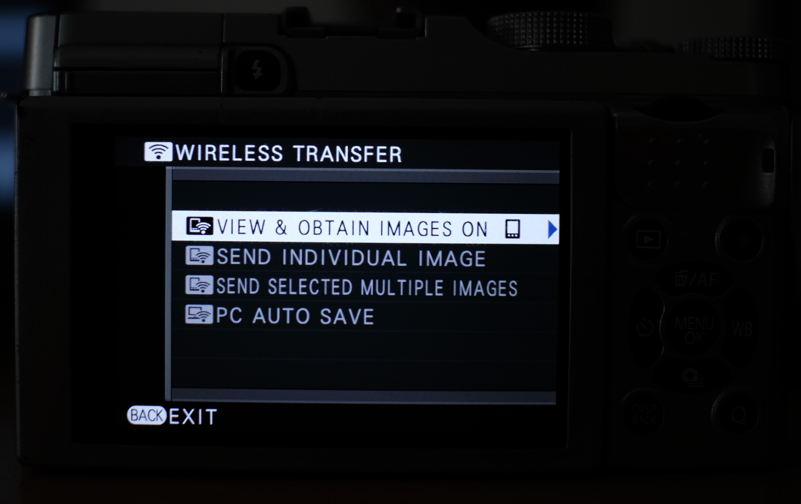

Help
Finding the wireless menu
- Look for ‘WIRELESS TRANSFER’ or ‘WIRELESS COMMUNICATION’ in ‘PLAYBACK MENU’
- On some older cameras, the ‘Fn’ button opens up the WiFi menu by default
WiFi pairing
- Transfer JPEGs and MOVs at 16mbps
- Supports GPS sync and liveview
Older cameras will have these options: 
When you press a connection mode, you will get a screen like this:

If you are connecting for the first time, press (OK) CHANGE. Otherwise your camera will reject connections from new clients.
PC AutoSave setup
You can setup PC AutoSave from:
- ‘SET-UP’ -> ‘PC AUTO SAVE SETTING’
- ‘CONNECTION SETTING’ -> ‘PC AUTO SAVE’ -> ‘PC AUTO SAVE SETTING’

SIMPLE SETUP: Press the WPS button on your router for 3 seconds and wait until your camera confirms a connection.
MANUAL SETUP: Select your WiFi network and punch in password on the camera.
Bluetooth
Sorry, Fudge does not support bluetooth yet.